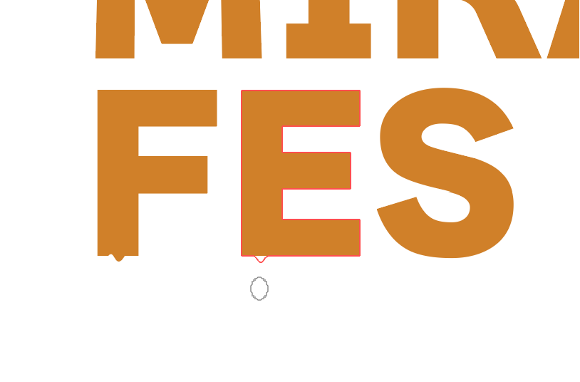
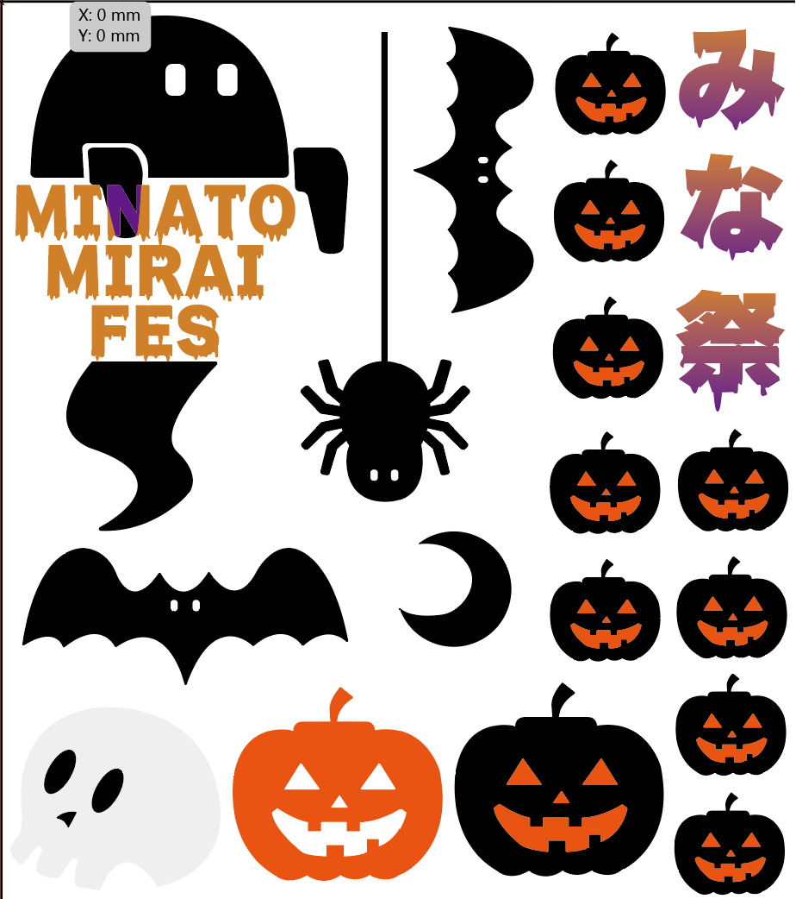
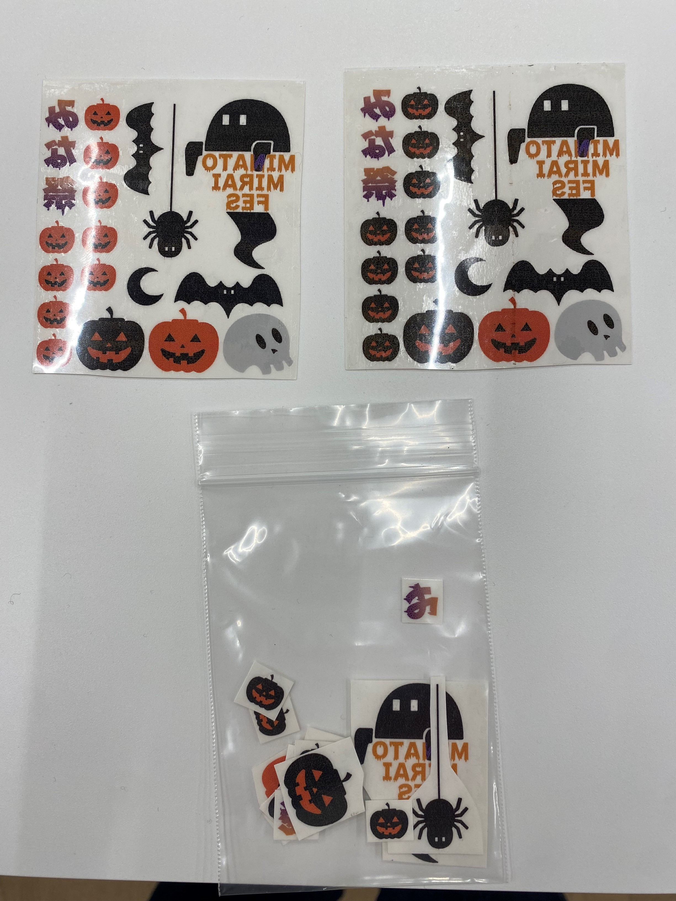

学祭出展準備
テーマ：みなとみらい祭をもっと楽しく
みなとみらい祭を心から楽しんでほしいという願いとただの大学見学じゃなくて楽しい
という経験を体感し続けられるものにしたい。
目標
主点品を通して来場者がみなとみらい祭は楽しい場所だったという記憶になる
現状
・回り切れないから寂しさが残る
・新しい場所やいつもと違う雰囲気にワクワクと不安が混じりあう
目標を達成するために
楽しいと思える記憶
ディズニーランド・USJ・映画館・ドロケイ・ミニゲーム・同窓会・ハロウィン
→以上のことから何かしらの世界観を作るのが良いのではないかと感じた。
学祭の世界観
・夢のもう一幕
・海系
・楽しい
→全体的に淡い海のイメージがある。
海的要素もみんなが想像する通りのみなとみらいで良いが、それは逆に記憶に残りにくいのではないかと感じた。
そのため新しいインパクトを取り入れてみようと思った。
アイデアまとめ
・誰も手に取っていない「新しいインパクト」＝ハロウィン的要素
・来場者が「経験」する＝ボディペイントシール
→それぞれハロウィン的世界観を身に付けるという行為で経験してもらうことにまとまった。
（採用理由）
〇ハロウィン的要素
学祭が２８日２９日というハロウィン直前ということで新しいインパクトとして採用。
むしろ今年のハロウィンを思い出してほしい。
→毎年来るハロウィンを思い出すときにこの学園祭を思い出してほしい。
〇ボディペイントシール
身に付けるという行為は体験となてワクワクを加速させるのではないかと思い採用。
→なりきることで世界観により没入できる。
作業工程
ターゲットは高校生や２０代のグループ
イラレでデザインの考案
初期案
垂れてる要素は良いけど、シンプルすぎる
学祭ロゴ
.png)
悪くはないが、オリジナリティーがない
最終案
ハロウィン要素とみなとみらい祭の融合！これに決定！
よりハロウィン風にするために

垂れてる要素は良かったので、文字に取り入れることに。
やり方はツールバーのワープツールを選択して、引き延ばすと出来ます。
当たり判定の大きさはAltバーを選択すると変更できます。
完成データ

印刷
転写シールに印刷し、切って梱包して完成！

UVプリンターは人体に有害らしく、肌に付けるものとしてはふさわしくないので、
自宅にあるインクジェットのプリンターを使いました。